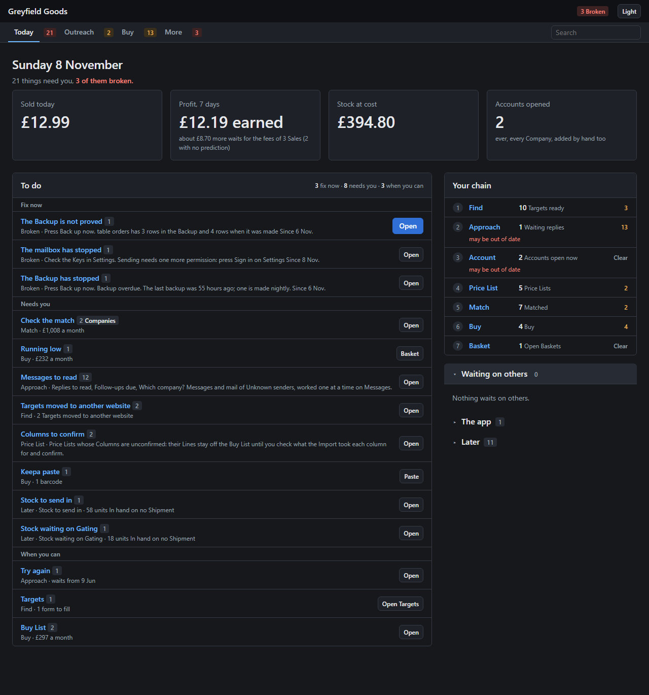
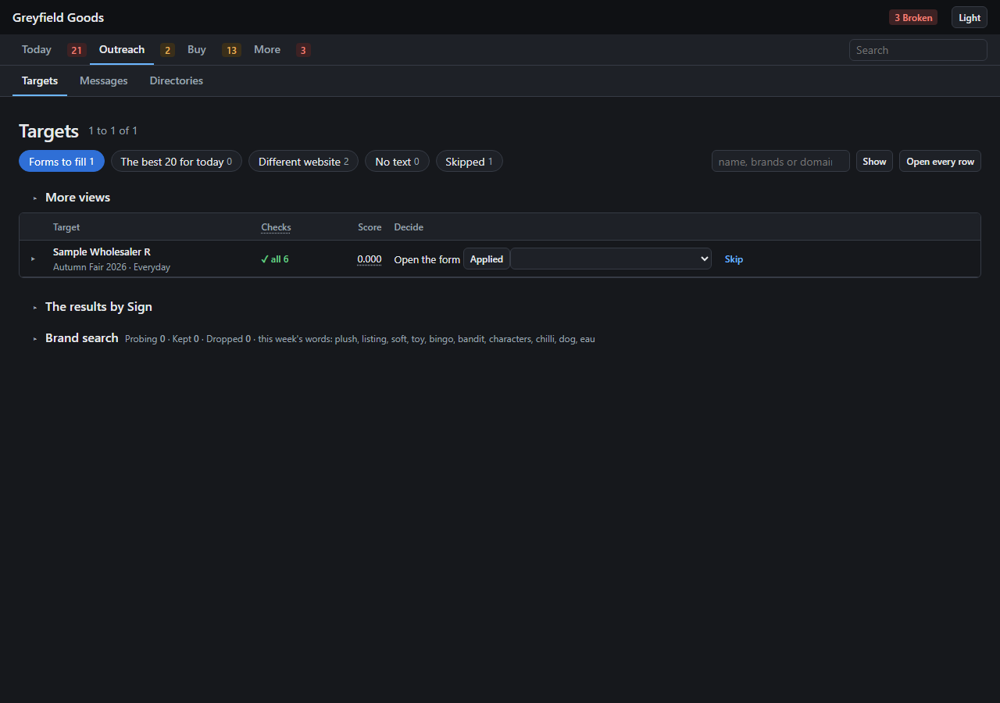
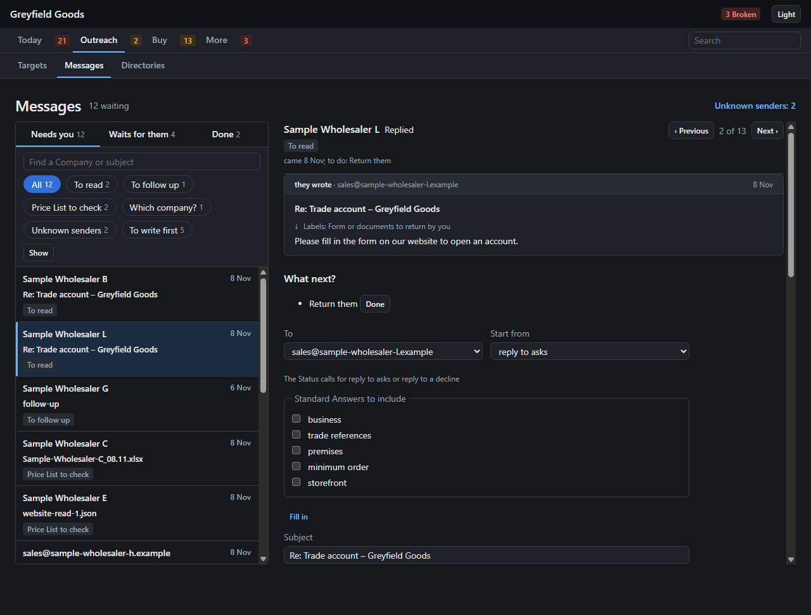
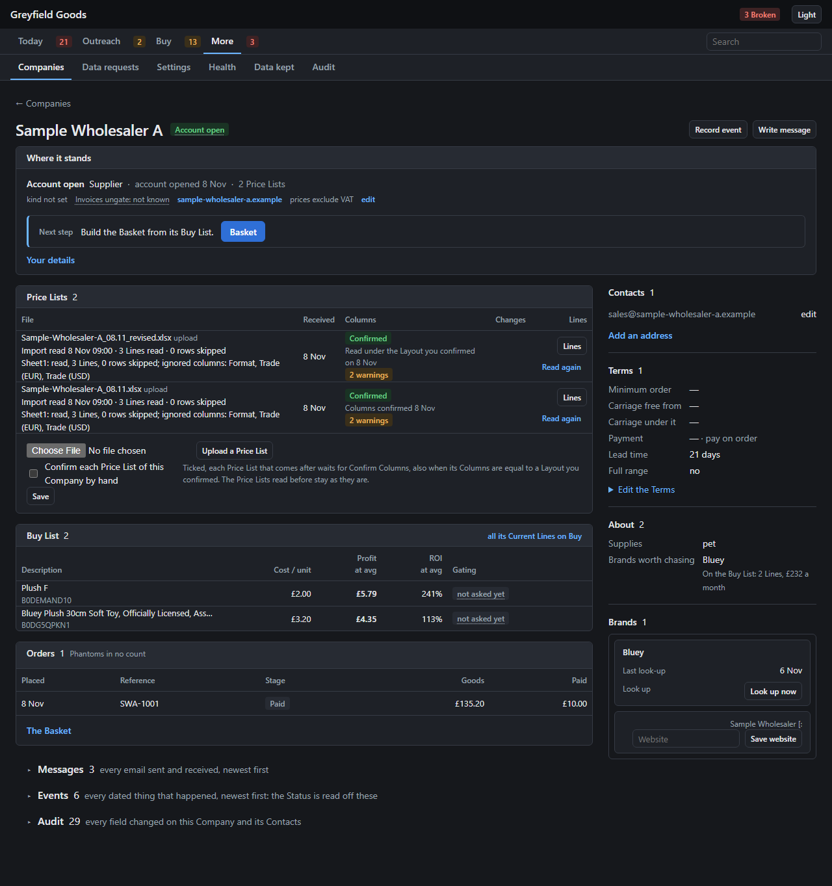
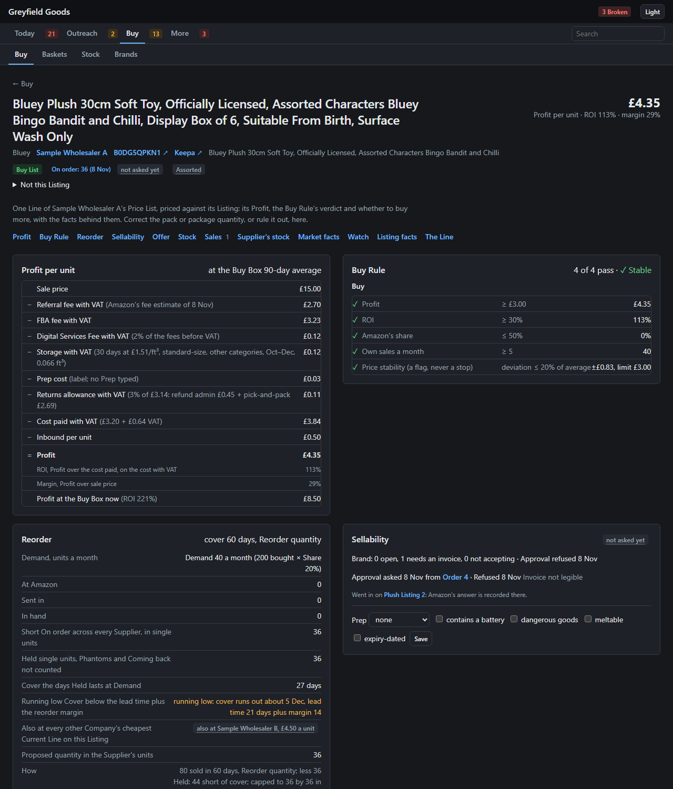
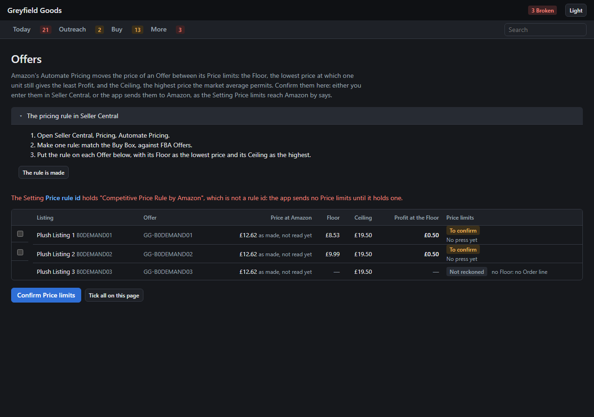
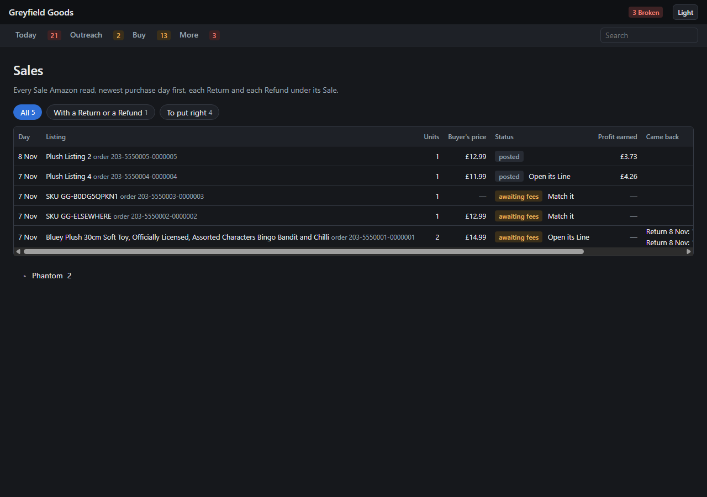
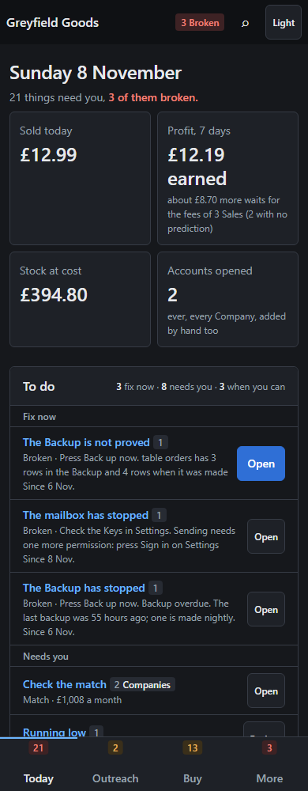

Reach
A wholesale sourcing and buying tool for Amazon FBA. A personal project by Hussein Darwich, October 2026 to the present.
What it does
Reach runs the buying side of a small Amazon FBA resale business, step by step: it finds UK wholesalers worth approaching, helps open trade accounts with them, reads their price lists, matches each line to its Amazon listing, judges whether the line is worth buying, and follows the order through to stock at Amazon and what it sold.
I planned and specified it, then built it by directing AI coding agents. Every supplier email, order and Amazon change waits for my sign-off: it never acts on its own.
Results so far
- Found the UK wholesalers behind 7,800 brands sold on Amazon, contacted 43 and opened talks with the 20 who replied.
- Matched 44 supplier price lists (34,000 lines) to Amazon listings by barcode, and set the buying rule that judges each line on fees, competition and margin.
- Took the first product from supplier price list to a live FBA offer in November 2026, with daily price and stock checks.
How I built it
- Planned first. I wrote down, in plain English, what each step of the business should do and the words it uses, and ranked what "good" means for the tool (first safe: nothing is spent or sent without my say-so; then correct figures; speed comes near the end).
- Small, written tasks. Each change began as a short written task with its goal and how we would know it worked. AI coding agents built each one, with automated tests, and a separate review checked the work against the task.
- Tried before it goes live. Each change is checked on a test copy with sample data first; only then is it released to the live copy that runs the business.
- Measured. A weekly review looks at what the tool did and what broke, and the next tasks come from that.
Screenshots
These use made-up sample data: every company name, price and figure below is invented for testing. No real supplier, price or sale is shown. They follow the buying chain in order, from finding wholesalers to what sold.










